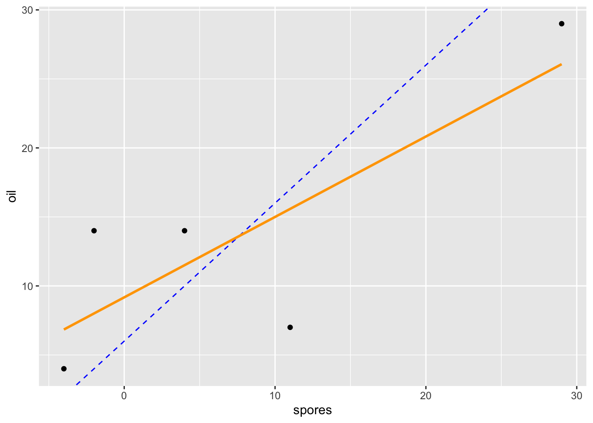
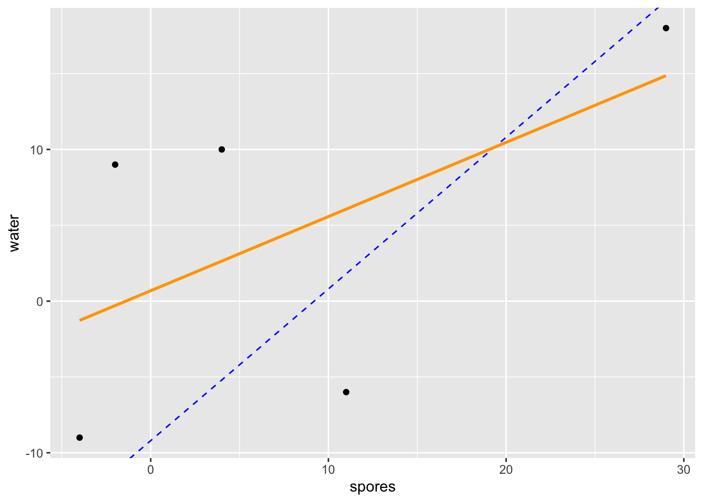
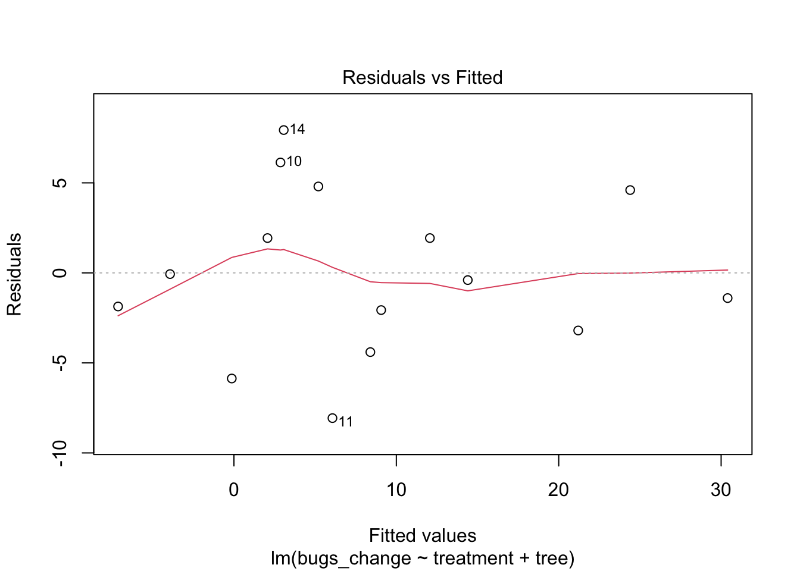
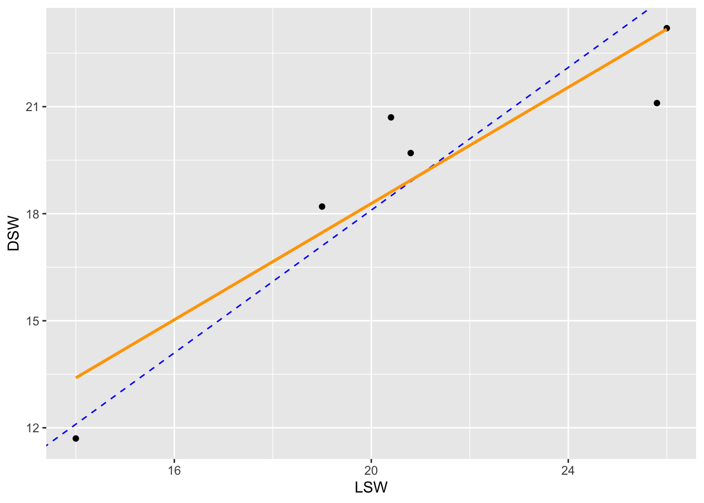
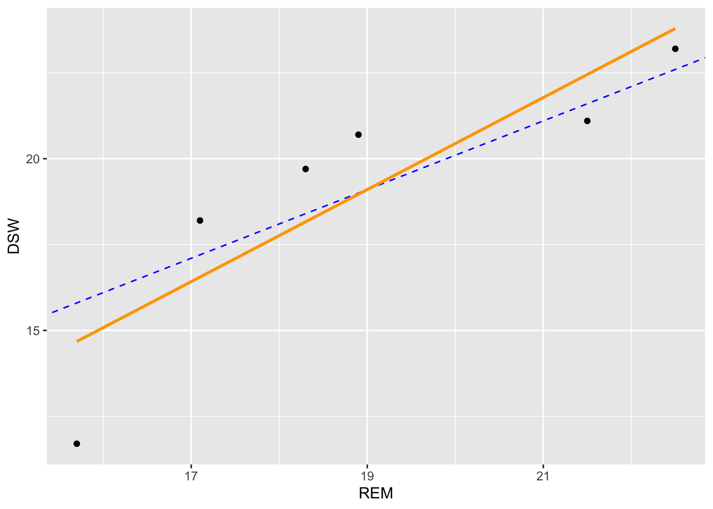
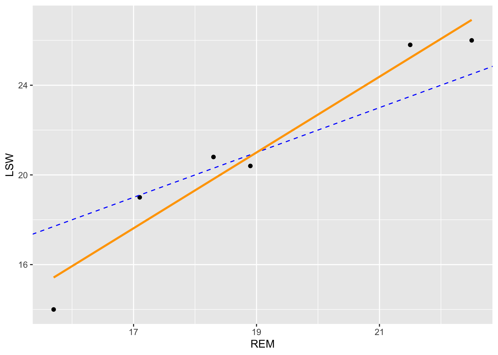

Post questions to #mini-project1 channel on Slack!
Direct message me on Slack.
Agenda
Review blocking
Assessing conditions in block designs
Two-Way Factorial Design
How to check assumptions for Complete Block Design
C. Constant effects – think about whether it is reasonable.
A. Additive effects – check Anscombe block plots.
S. Same standard deviations – is the biggest SD less than two times as large as the smallest? check residual versus fitted plot: does the plot thicken?
I. Independent residuals – think about whether it is reasonable.
N. Normally distributed residuals – construct a histogram or normal probability plot of residuals.
Z. Zero mean residuals – construct a histogram or normal probability plot of residuals.
How to check assumptions for Complete Block Design
C. Constant effects – think about whether it is reasonable.
A. Additive effects – check Anscombe block plots.
S. Same standard deviations – is the biggest SD less than two times as large as the smallest? check residual versus fitted plot: does the plot thicken?
I. Independent residuals – think about whether it is reasonable.
N. Normally distributed residuals – construct a histogram or normal probability plot of residuals.
Z. Zero mean residuals – construct a histogram or normal probability plot of residuals.
Anscombe Block Plots
Scatterplots of two levels of the factor of interest.
qplot(x = spores, y = oil, data = mealybugs_wide) +geom_abline(intercept =13.6-7.6, slope =1, color ="blue", linetype =2) +geom_smooth(method ="lm", se =0, color ="orange")

Anscombe Block Plots
qplot(x = spores, y = water, data = mealybugs_wide) +geom_abline(intercept =4.4-13.6, slope =1, color ="blue", linetype =2) +geom_smooth(method ="lm", se =0, color ="orange")

Anscombe Block Plots
qplot(x = oil, y = water, data = mealybugs_wide) +geom_abline(intercept =4.4-13.6, slope =1, color ="blue", linetype =2) +geom_smooth(method ="lm", se =0, color ="orange")
# A tibble: 3 × 3
treatment m sd
<chr> <dbl> <dbl>
1 oil 13.6 9.66
2 spores 7.6 13.3
3 water 4.4 11.5
mealybugs %>%group_by(treatment) %>%summarize(m =mean(bugs_change),sd =sd(bugs_change)) %>%summarize(max(sd)/min(sd)) #calculating using min and max function
# A tibble: 1 × 1
`max(sd)/min(sd)`
<dbl>
1 1.38
Assessing S Condition
Residual versus fitted plot
Looking for no apparent pattern.
Constant variance across fitted values.
mod <-lm(bugs_change ~ treatment + tree, data = mealybugs)plot(mod, which =1)
Assessing S Condition
mod <-lm(bugs_change ~ treatment + tree, data = mealybugs)plot(mod, which =1)

SleepingShrews: Anscombe Block Plots
library(Stat2Data)data("SleepingShrews")
Fit the two-way additive model for the SleepingShrews data. (See homework 5)
Construct Anscombe Block Plots to assess the additivity condition
# A tibble: 3 × 2
Phase phase_eff
<fct> <dbl>
1 DSW -0.600
2 LSW 1.3
3 REM -0.700
SleepingShrews: Anscombe Block Plots
Intercept is y_eff - x_eff:
qplot(x = LSW, y = DSW, data = SleepingShrews_wide) +geom_abline(intercept = (-0.6)-1.3, slope =1, color ="blue", linetype =2) +geom_smooth(method ="lm", se =0, color ="orange")

SleepingShrews: Anscombe Block Plots
qplot(x = REM, y = DSW, data = SleepingShrews_wide) +geom_abline(intercept = (-0.6)-(-0.7), slope =1, color ="blue", linetype =2) +geom_smooth(method ="lm", se =0, color ="orange")

SleepingShrews: Anscombe Block Plots
qplot(x = REM, y = LSW, data = SleepingShrews_wide) +geom_abline(intercept = (1.3)-(-0.7), slope =1, color ="blue", linetype =2) +geom_smooth(method ="lm", se =0, color ="orange")

Paper Helicopters
Paper helicopters can be cut from one half of an 8.5 by 11 sheet of paper. We can conduct an experiment by dropping helicopters from a fixed height and clocking the time it takes to drop. We can vary wing length: 4.25 in, 4.0 in, 3.75 in, and 3.5 in, as well as body width: 3.25 in, 3.75 in, 4.0 in, and 4.25 in. We’ll make 32 planes and randomly assign them to the 16 combinations.
Parks and Recreation
Deputy director of the Pawnee Parks and Rec department, Leslie Knope, needs to know how resistant different vegetative types are to trampling so that the number of visitors can be controlled in sensitive areas. Twenty lanes of a park are established, each .5 m wide and 1.5 m long. These twenty lanes are randomly assigned to five treatments: 0, 25, 75, 200, or 500 walking passes. Each pass consists of a 70-kg individual wearing boots, walking in a natural gait. One year after trampling, the average height of the vegetation along the lanes are measured.
Design Name Disambiguation
One-Way Design
If the factor is a true experimental factor
One-Way Randomized Design or
Block design or Two-Way Additive Model
If the factor of interest is experimental
Randomized Block Design
If every block gets every treatment
Complete Block Design
Design Name Disambiguation
Two-Way Factorial Design
If the factor of interest is experimental
Randomized Two-Way Factorial
There is no blocking in this design
Piglets
It seems natural to think that adding the right vitamins to a pig’s diet might produce fatter pigs faster. You’ve decided to study the effects of B12 in two doses (0mg and 5mg). But pigs have bacteria living in their intestines that might prevent the uptake of vitamins, so you decided to give antibiotics to the pigs in one of two doses (0mg or 40 mg). You design your experiment in such a way that 3 piglets are randomly assigned to each of the 4 treatment conditions. You measure their weight every day, and take each pig’s average daily weight gain as your final number recorded.
Two-Way Factorial Design Factor Diagram
Draw the factor diagram
Research Questions in a Two-Way Factorial Design
Does treatment A have an effect on the response variable?
Is there a main effect of factor A?
Does treatment B have an effect on the response variable?
Is there a main effect of factor B?
Does being in a specific combination of treatments have an effect over and above the additive effects of treatment A and B alone?
Is there an interaction between factor A and factor B?


{kind=link}